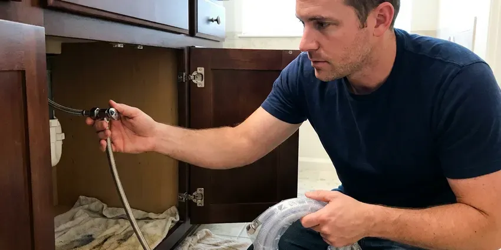
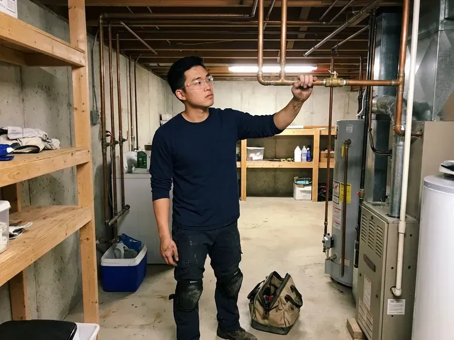

Sewer Repair in Schenectady, NY
Backups in more than one drain usually mean the main line. HCL Plumbing figures out the cause on the first trip across Schenectady, NY.
- Spot Repair or Full Replacement
- Licensed New York Plumbers
- 811 Called Ahead of Every Dig
- Trench Backfilled and Cleaned Up

Sagging, Cracked or Clogged Sewer Pipe? We Repair It in Schenectady, NY
You see the crack or root mass on screen before a single shovel goes in.
Sewer Line Repair in Schenectady, NY
HCL Plumbing repairs the main sewer line that runs from your house to the public main or septic tank in Schenectady, NY. The first tool out is the camera. The camera head carries a sonde, so we can mark the depth and location of every crack, root mass or sag on the surface before we talk about price. After that, you get a written price for every way to fix it.
Some of what we do:
- Open-Trench Spot Repair
- Sewer Video Inspection With Depth Locating
- Trenchless Cured-in-Place Lining

Additional Plumbing Repair Services in Schenectady, NY
We offer expert plumbing repair services across Schenectady, NY to fix leaks, restore flow, and keep your system running smoothly.




Water Leak Repair near Schenectady


Customers
Why Choose HCL Plumbing for Sewer Repair in Schenectady, NY?
We pull permits where the city requires them and schedule the inspection ourselves. The paperwork is on us. The inspector sees the new pipe, the bedding and the fall before we backfill, and the trench stays open until the work is signed off.
- Licensed Plumbers, Licensed New York plumbers handle the repair and the final tie-in.
- Tested Work, We run water through the repair and verify the flow before closing the trench.
- Full Equipment, Camera, locator, jetter and excavation gear come on every sewer call.
Citywide Coverage
Homes on slab, homes with basements and homes on crawlspaces all route their sewer differently. We work on all three. The camera shows where the building drain leaves the foundation in your Schenectady house, which tells us whether the repair is outside, under the floor or right at the wall.
Experienced Team
Our crew handles the camera work, the dig, the pipe work and the city inspection. One crew does it start to finish. Fewer people on the job means fewer missed details, like a cleanout that never got installed or a coupling that does not match the old pipe.
Safety-First Approach
All repairs are completed to the plumbing code your city has adopted. Fall, fittings and bedding all follow code. When a permit is required we pull it, schedule the inspection, and leave the trench open until the work passes.
Trusted Certified Schenectady Plumbing Services Professionals
At HCL Plumbing, we take pride in licensed, certified plumbing services throughout Schenectady, NY. Credentials matter in this trade. Our plumbers hold recognized industry credentials, and they follow strict safety and quality rules on every repair, installation and maintenance call we run.
Call Us Now PHCC Plumbing Contractor Recognition
PHCC Plumbing Contractor Recognition Better Business Bureau (BBB) Accreditation
Better Business Bureau (BBB) Accreditation Angi Certified Pro
Angi Certified Pro ISO 9001 Quality Management Certification
ISO 9001 Quality Management CertificationSewer Repair Methods for Schenectady, NY Homes
Video Camera Sewer Inspection in Schenectady
A self-leveling camera goes in at the cleanout or through a pulled toilet. The full length gets recorded. Cracks, root intrusion, offset joints and standing water all show up on the screen, and the sonde in the camera head lets us mark the exact spot and depth on the ground above, so any excavation stays small and targeted. Older homes in Schenectady often hide two or three problems in one line, and the video catches all of them.

Bellied Sewer Line Correction in Schenectady, NY
A belly is a low spot where the pipe has sagged and holds standing water. Paper and solids settle there. Frost reaches deep into the ground here, so water service lines must be buried well below the surface to avoid freeze damage. We measure the depth of standing water on camera, dig out that section, re-bed the pipe on compacted gravel and reset the slope to the quarter inch per foot most codes call for on residential laterals. Not every sag needs digging, and we will tell you which yours is.
Sewer Line Hydro-Jetting in Schenectady
A hydro-jetter pushes water at several thousand psi through a nozzle that scours the full inside of the pipe. A cable only punches a hole. That makes jetting the better choice for grease, scale and fine root growth, and we always jet a line before lining it. Brittle or broken pipe is a different story. We check the pipe on video before we jet it.
After-Hours Sewer Repair in Schenectady
Main lines like to fail on holidays. We still answer. An after-hours call gets a tech with a cable machine and a camera, which is enough to restore flow in most cases and to tell you if you have a clog or a broken pipe. If it is structural, we schedule the dig for the earliest safe window. We avoid digging blind at night near gas and electric lines.
Pipe Burst & Collapse Repair in Schenectady, NY
A collapsed sewer pipe stops all flow at the point of failure. Every drain backs up. Collapses usually come from corroded cast iron, crushed clay under a driveway or tar-paper pipe that has finally flattened, and the camera tells us exactly where the pipe gave way and how deep it sits. We dig at the mark and replace the broken length with PVC. Lining cannot fix a full collapse.
Trenchless Sewer Line Repair in Schenectady, NY
Trenchless repair means we fix the pipe without opening a trench along its full length. Usually two small pits. Pipe bursting pulls a new HDPE line through the old one and splits the old pipe outward, while cured-in-place lining pushes a resin-soaked felt tube into the old pipe and hardens it into a new wall. Both save driveways and mature trees. Not every line qualifies, and we will say so.
Sewer Camera Inspection in Schenectady
Every repair starts with a look inside. We run the camera from the cleanout. You get a copy of the video and a plain written summary of each defect with its distance from the house, which helps if you are buying a home, filing a claim or getting a second opinion on a quote someone else gave you. Sometimes the answer is that the line is fine.

Sewer Repair Cost Comparison in Schenectady, NY
A spot repair is the cheapest fix when the rest of the line is sound. Lining costs more per foot. It avoids excavation, though, and on long runs under driveways or patios the savings on concrete and landscaping often outweigh the higher price of the liner itself. Full replacement is right for Orangeburg or a line broken in several places. You get each option in writing with a number attached.
Sewer Repair Near Me in Schenectady, NY
Local matters on a sewer job because the city inspection, the right-of-way rules and the depth of the public main vary from place to place. We work here every week. That keeps permit timing predictable. We already know how the inspection office runs.
You want a crew that shows up, finds the problem and fixes it without a week of back and forth. That is how we run sewer calls. One tech diagnoses it on camera, the same company does the dig and the repair, so nobody has to juggle three different contractors and three invoices.
HCL Plumbing at a Glance
- Licensed and insured plumbers serving Schenectady, NY
- 24/7 emergency service with same-day scheduling
- Upfront, flat-rate pricing before work begins
- 4.8-star rated by 520+ New York customers
Schenectady Map
Schenectady Information
- Population
- 68,544
- Area codes
- 518/838/607
- Service area
- Schenectady and towns within a 40 mile drive
- Nearby
- Albany, Troy, Saratoga Springs, Glens Falls
Older homes in Schenectady, NY often have clay or cast iron joints that pull apart over the years and let roots in. Frost reaches deep into the ground here, so water service lines must be buried well below the surface to avoid freezing.
Expert Services
Call HCL Plumbing for reliable plumbing work done by licensed pros in Schenectady, NY.
Our Specialized Plumbing Services in Schenectady, NY
At HCL Plumbing, you get every kind of plumbing service from one company across Schenectady, NY. From leak detection to full system installs, our team works fast and charges fair prices on homes and commercial properties alike. Explore our core services below:


How a Sewer Repair Goes in Schenectady, NY
We show you the problem before we fix it, and we test the repair before we close the trench.
Request a Camera Inspection
Call (716) 396-7101 and tell us what you are seeing. We often book same-day inspections.
Locate and Price
We mark the damaged spot, note its depth and price each repair in writing.
Fix and Verify
We repair the line, run water to confirm flow and give you the after footage to keep.
Frequently Asked Questions About Sewer Repair in Schenectady
A single spot repair typically runs $1,500 to $4,500. Depth drives most of that. Trenchless lining usually lands between $80 and $250 per foot, and full replacement of a typical residential lateral ranges from $5,000 to $15,000, depending on length and what sits on top of the pipe. The written quote follows the camera inspection.
Standard policies usually exclude the pipe itself. Wear and roots are not covered. They may cover water damage inside the house that resulted from the backup, and some insurers sell a service line endorsement that pays for the lateral repair. Ask your agent about service line coverage. We give you video and a written report for the claim.
Watch for clogs that keep coming back in more than one drain. Gurgling toilets are another clue. A sewer smell in the yard, a strip of grass that is greener than the rest, or water rising in the shower when the washing machine empties all point to a problem in the main line rather than a single fixture. A camera inspection settles it.
Most spot repairs are done in one day, excavation and backfill included. Bigger jobs run past a day. Larger replacements, or jobs that need a right-of-way permit to dig near the street, can take two to four days depending on the inspection schedule and the length of pipe. We put the schedule in writing.
A rental auger can open a soft clog. Structural damage stays. Forcing a cable through a broken or offset joint can snag, tear the pipe further or leave a cutter head stuck underground, and then someone has to dig to get the cable out. Repeat clogs deserve a video inspection.
Usually not. Locating keeps the dig small. Most problems can be fixed through a single pit at the marked spot or with trenchless methods through one or two small holes, with plywood under the equipment and the soil compacted back in place. Sod and seed are your call.
For a spot repair, you lose the sewer for a few hours. Bigger jobs take a day or more. On a full replacement we stage the work so the house is reconnected each evening where possible, so you know exactly what you can run and what to hold off on. Most families stay home through it.
It depends on the city and the scope. Full replacements almost always do. Small repairs on private property may be exempt, while anything at the street or the public tap typically needs both. We check and pull it if needed.
Hear From Customers Who Hired Our Plumbing Experts

Megan L.
Our upstairs tub drained so slowly that every shower turned into a bath. HCL Plumbing pulled a wad of hair out of the stopper and then snaked the line past the trap. Three months later it still drains fast.
Drain Cleaning · Troy, NY
Jessica T.
We were adding a gas range in a kitchen remodel and needed a new line run from the meter. The plumber pulled the permit, ran the pipe through the crawl space, and had it inspected and approved within the week.
Gas Line Repair · Glens Falls, NY
Patricia H.
We had a slab leak that two other companies could not find. HCL Plumbing located it in under an hour with a listening device. They rerouted the line through the attic instead of breaking up the floor, so we kept our kitchen tile.
Slab Leak Repair · Troy, NY
Mark T.
The floor drain in our office break room backed up every few weeks. The plumber ran a cable, then put a camera down and found roots at a joint about thirty feet out. Seeing it on the screen made the decision easy.
Drain Cleaning · Troy, NYSofia M.
Two new toilets went in during one visit. The tech set them on new wax rings and swapped the old supply lines. He also noticed our bathroom faucet dripping and replaced the cartridge while he was there. No mess left behind.
Toilet Installation · Glens Falls, NYMonica A.
Our water bill nearly doubled in one month with no change in how we used water. The tech checked the meter, heard the leak under the hallway with his equipment, and opened a hole about a foot square. Fixed the same day.
Slab Leak Repair · Poughkeepsie, NY